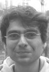
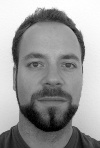
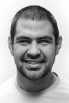
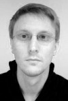

The Two!Ears Project comprises 10 partner institutions. 9 teams are located in five different countries the EU, one in the US. Hover over the individual member pictures below for the names.
| Institute | Researchers |
| Audio Visual Technology Group, TU Ilmenau, Germany |  |
| | Neural Information Processing Group, TU Berlin, Germany |  |
 | Department of Electrical Engineering-Hearing Systems, Technical University of Denmark |  |
 | Institute of Communication Acoustics, Ruhr University Bochum, Germany | |
| The Institute for Intelligent Systems and Robotics, UPMC, France |  |
| Robotics, Action and Perception Group, LAAS, France |  |
 | Institute of Communications Engineering, University Rostock, Germany | |
| Department of Computer Science, University of Sheffield, UK | |
 | Human-Technology Interaction Group, Eindhoven University of Technology, Netherlands | |
| The Center for Cognition, Communication, and Culture, Rensselaer, USA | |